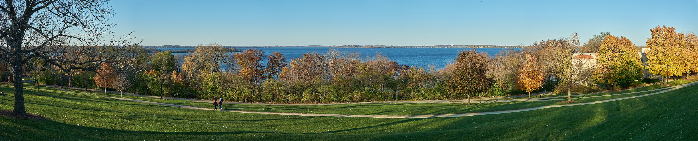

What You Can Explore
Learning
Explore subjects that interest you and find new academic goals.
Community
Meet people and take part in student activities.
Madison
Enjoy the lakes and discover places around the city.
A Campus by the Lake
Lake Mendota is one of the places that makes the UW–Madison campus special. Students can enjoy the view and spend time outdoors between classes.

More About UW–Madison
Academics
Students can explore different subjects and learn more about their interests.
Student Life
Students can join organizations, attend campus events, and spend time with friends.
- Student organizations
- Campus events
- Outdoor activities